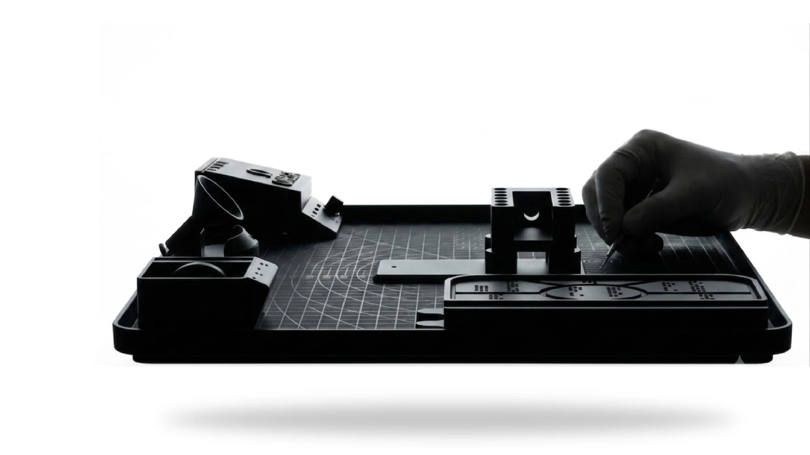
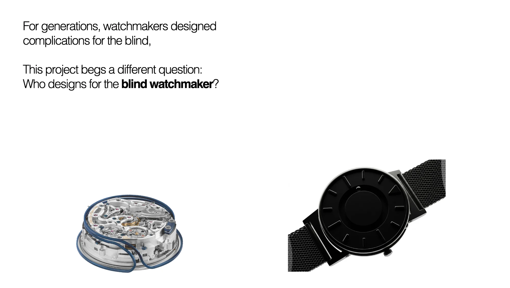
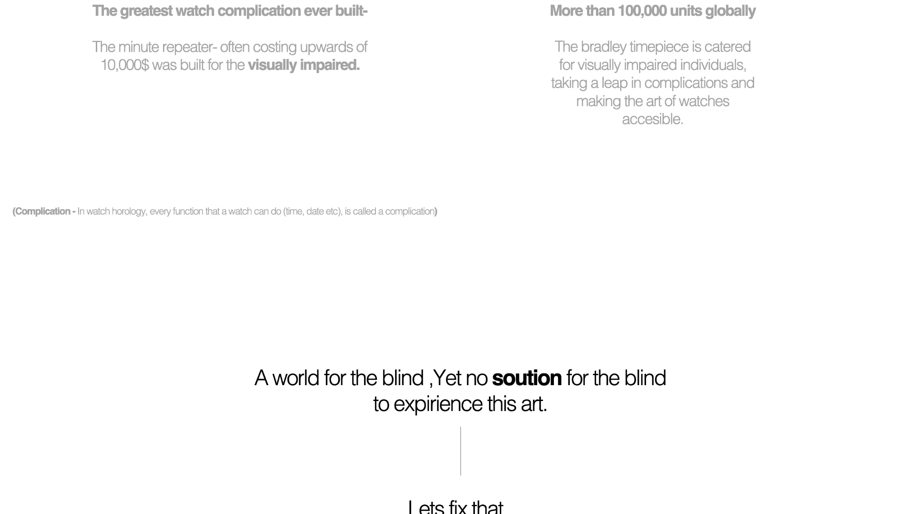
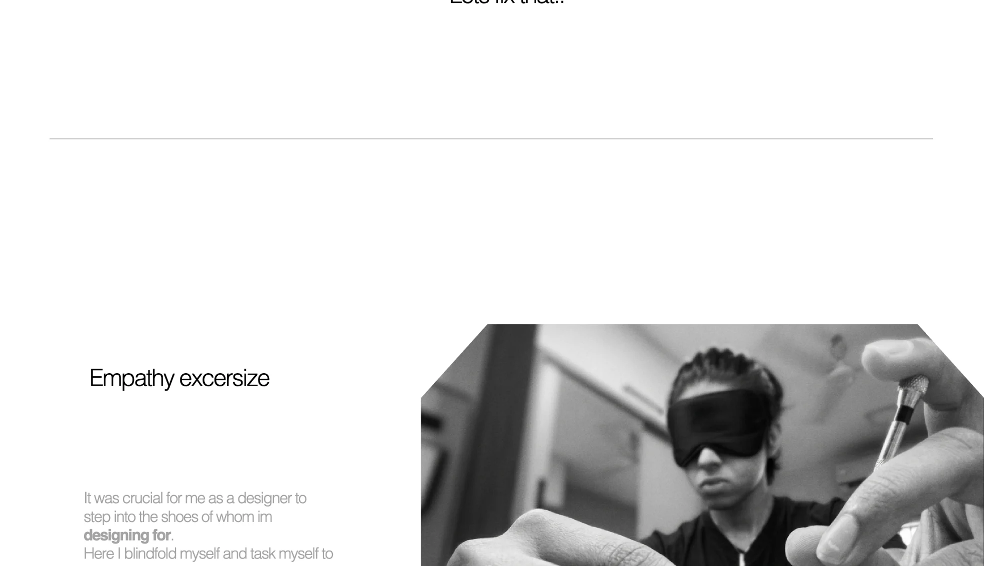
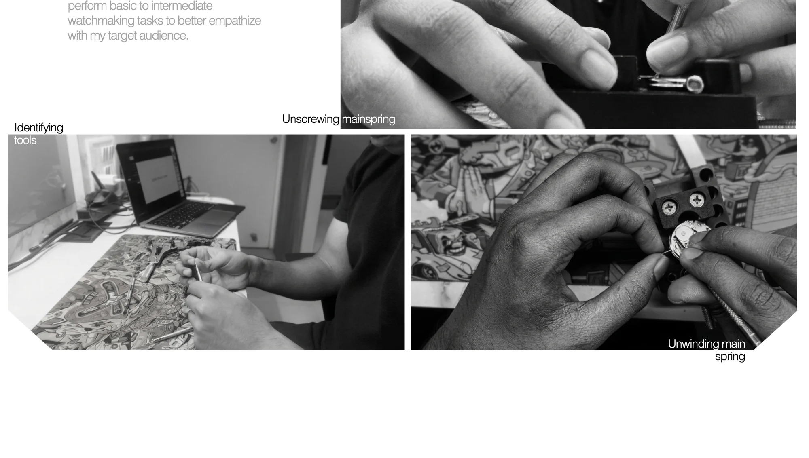
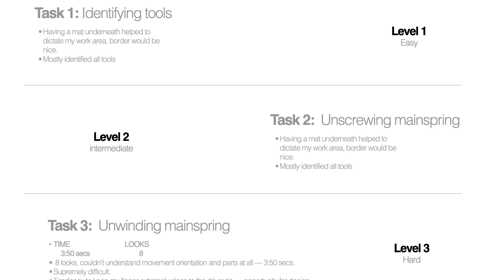
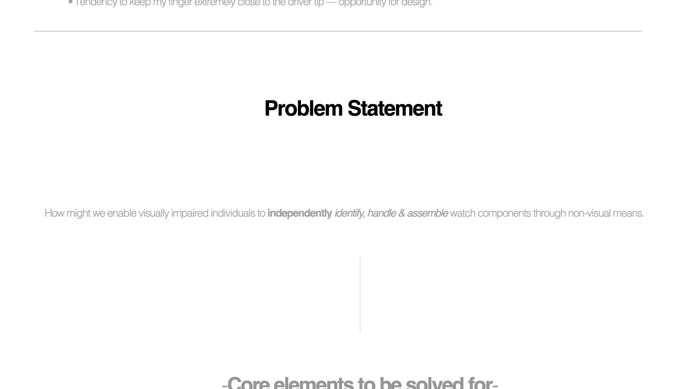
Defining scope & Prospects
After careful analysis of empathy excersize and problem statement, I defined the 3 primary aspects to tackle
• Part identification — what is what.
• Spatial orientation — what is placed where.
• Precision in placing — accurately placing items into the mechanism
These
are
all
the
Core
elements
that
we
will
solve
Prototype
1
-
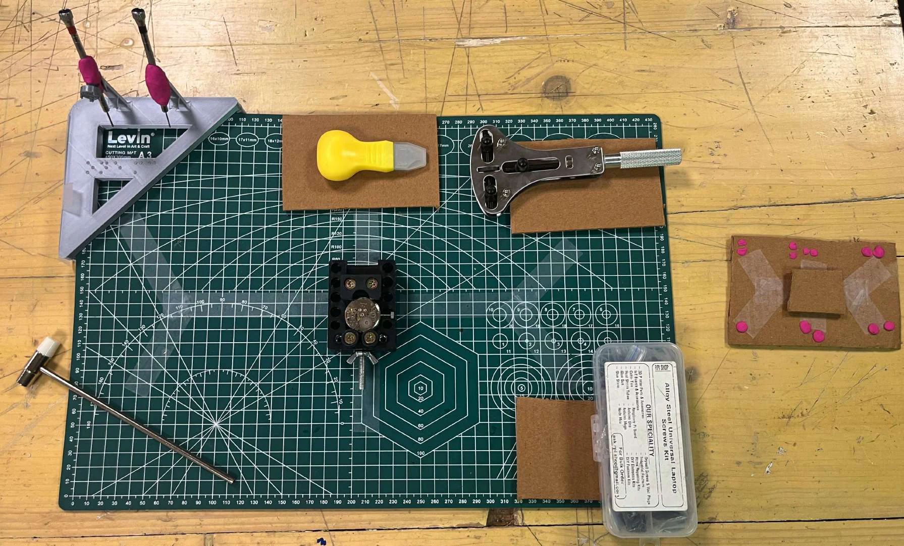
(Hover on images for user feedback)
Here is my first low fidelity model as a proof of concept
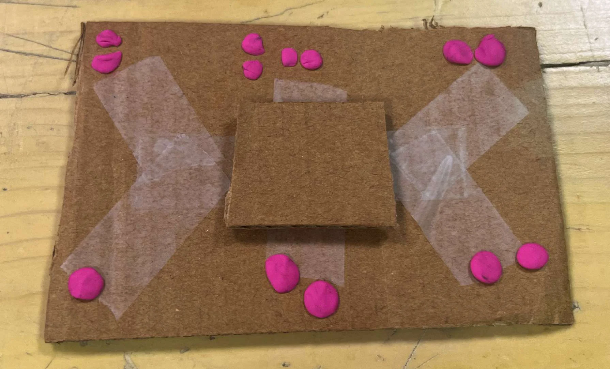
1 ) A dedicated workspace mini braille map to oreint the user to the
relevant tools that are placed on the work tray
Solves
-
• Spatial orientation — what is placed where.
• Part identification — what is what.
Finger attachment — media to come
2) A finger attatchment to easily manuver and handle drivers
Solves
-
• Precision in placing — accurately placing items into the mechanism.
Work tray tracks — media to come
3) Tracks on work tray to guide the user to the respective tools
Solves
-
• Precision in placing — accurately placing items into the mechanism
After all valuable feedbacks from my mentor and fellow user, I improved many aspects of the design to better cater the habits and intuition of a visually impaired individual .
Designed for the hands ,not the eye
Every element is carefully curated to maximise abilities of a visually impaired individual
referenced project
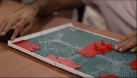
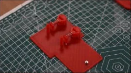
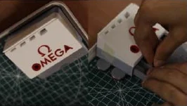
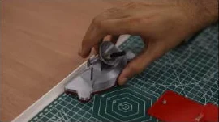
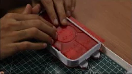
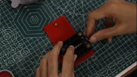
VALIDATION
A 4-part custom mechanism, assembled entirely by touch.
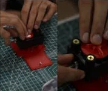
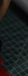
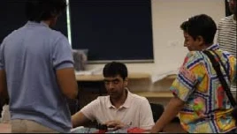
09
Valuable feedback session from industry professionals.